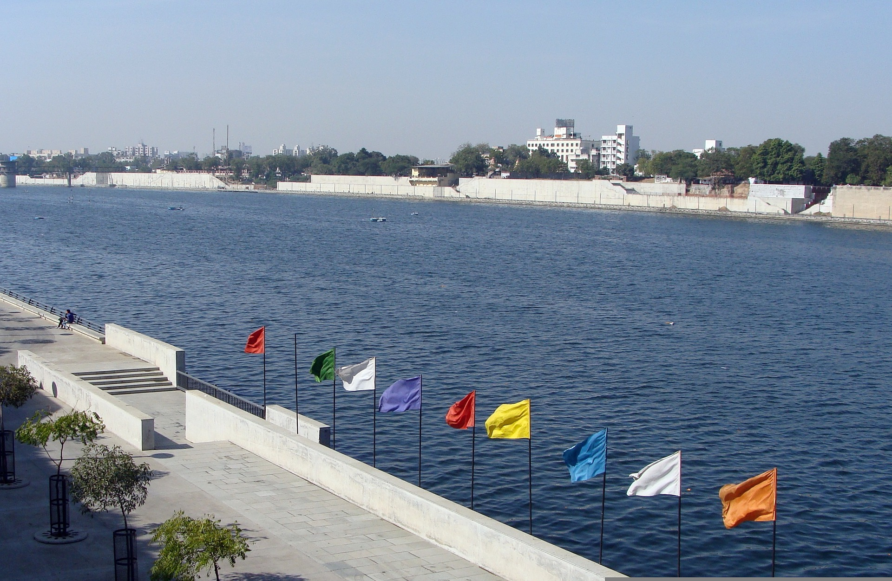

Ahmedabad or Amdavad as Gujaratis love to call it, is a city that paints a
pretty picture of fun, frolic, colours of the chaniya cholis and the taste
of gathiyas and undhiyu. It is the first in the world to be declared a
World Heritage City by UNESCO. Ahmedabad has undergone continuous change
since the time it was conceptualised and founded by Sultan Ahmed Shah.
But, all through these years, something that has stayed constant is the
love of the city for celebrating life, and preserving its heritage through
its architectural wonders. These wonders are now the pride of the city and
are some of the top tourist attractions of Gujarat. Apart from these,
there are several parks and water tanks in the city that are worthy of a
visit.
-
-
-
-
-
-
Hare Krishna Mandir Temple
Tourist Places and Things to do in Ahmedabad
The largest city in Gujarat, Ahmedabad boasts majestic historical
structures, old textile mills, serene lakes and insightful museums; thus, it
offers umpteen things to do for everyone. From spending time at the
Sabarmati Ashram, exploring Calico Museum and witnessing the old-world charm
of Jama Masjid to indulging in fun activities at Kankaria Lake, watching
movies at Sunset Drive-In and exploring vintage cars at Auto World Vintage
Car Museum; there are an infinite number of things to do in Ahmedabad. You
can know about the bygone era of the city at the magnificent historical
places in Ahmedabad which include Teen Darwaza and Rani no Hajiro.
With Sabarmati River and plenty of lakes running through it, Ahmedabad is
blessed with scenic beauty and greenery which makes it rich in flora and
fauna. Kankaria Lake, Vastrapur Lake and Chandola Lake are some of the most
popular lakes in Ahmedabad that you must visit. Food lovers will find the
best Gujarati and international fare at both fine dining restaurants and
local markets. Rajwadu, Dakshinayan, Tomato’s, Silver leaf Bistro and
Tandoorworkz are among the most popular restaurants in Ahmedabad. For retail
therapy, you must visit Law Garden Bazar, Sindhi Market, AlphaOne Mall,
Iscon Mega Mall and CG Road which are some of the most prominent shopping
places in Ahmedabad
Confused finding your dream destination ?
we find many people struggling to decide which place to visit , worry no
more .
Feel free to contact us and book a personal turist guide, you can get
contact information under about us page